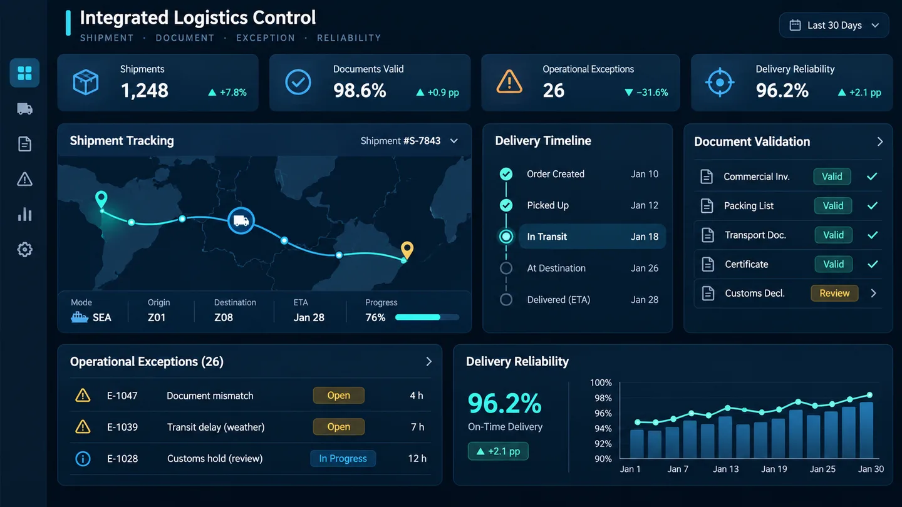

As-Is
- Eventos e documentos consultados separadamente.
- Tratamento reativo de exceções.
- Baixa rastreabilidade entre dado de origem e indicador.
Centraliza eventos e documentos para explicar o estado de uma entrega, identificar exceções e preservar a rastreabilidade do dado ao indicador.

IMAGEM CONCEITUAL · NÃO É TELA FUNCIONALEm uma operação logística, eventos de transporte, documentos e ocorrências podem permanecer distribuídos entre sistemas e controles diferentes. Essa fragmentação dificulta rastrear o ciclo completo, identificar exceções e explicar por que uma entrega está regular, atrasada ou contestada.
O ILC combina PostgreSQL e Alembic para a base relacional, FastAPI para eventos, rotinas de extração e validação de PDF/XML, controles de retry e idempotência, SQL analítico e uma aplicação local em Streamlit. O projeto permanece em desenvolvimento; as entregas posteriores estão separadas em branches e documentos de consolidação.
As métricas abaixo demonstram escala, qualidade e confiabilidade de engenharia; não representam impacto financeiro ou resultado de uma operação real.